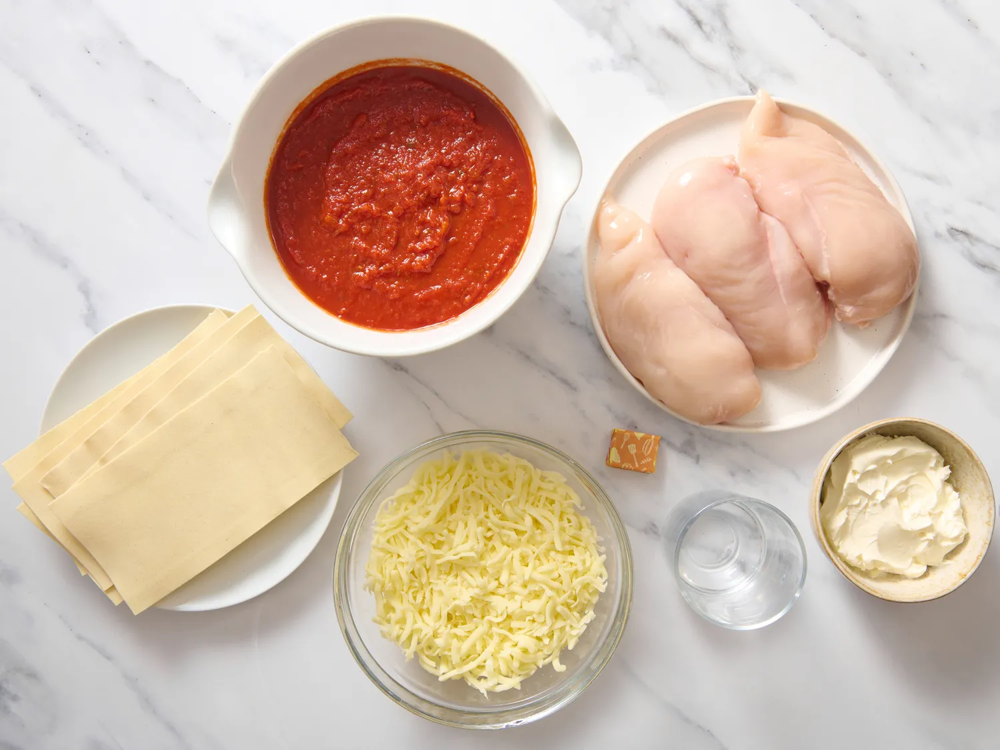
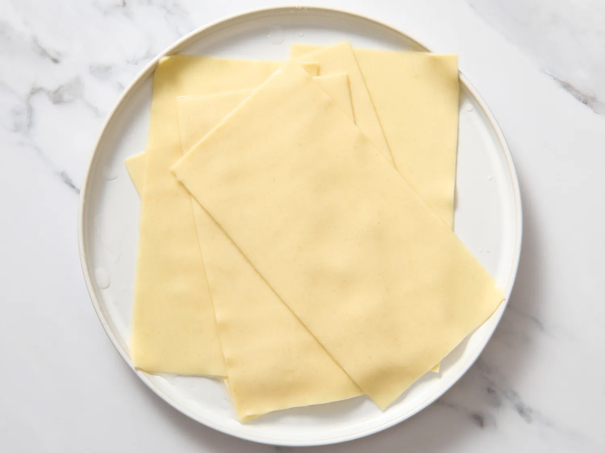
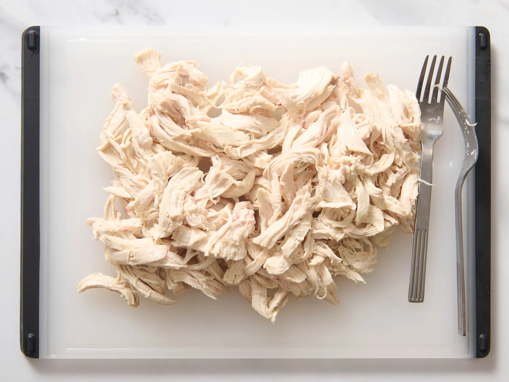
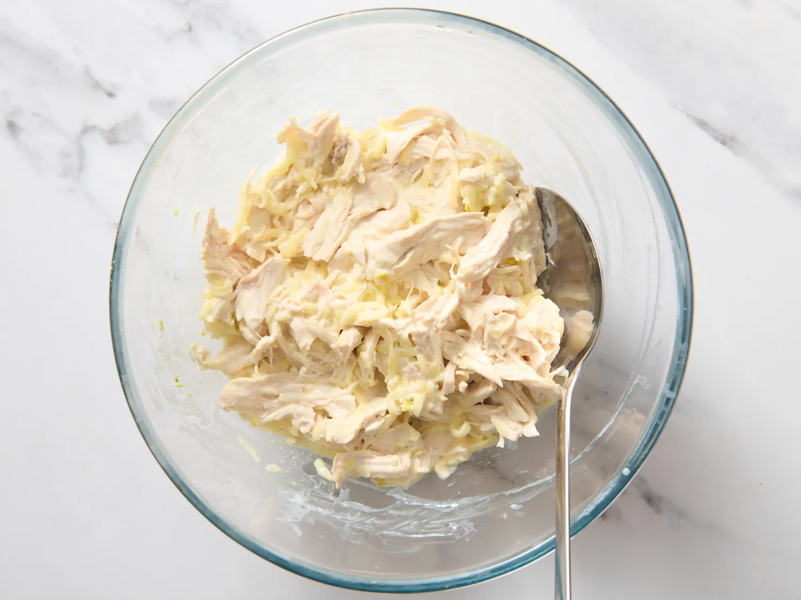
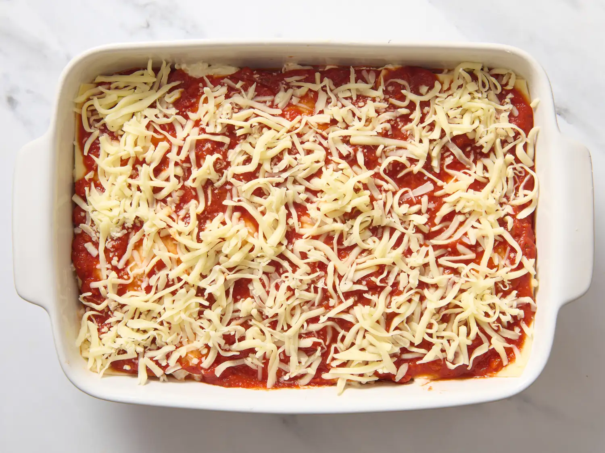
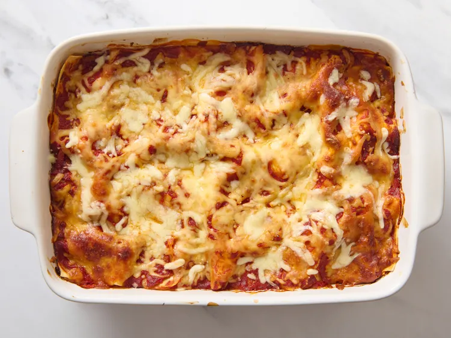

Homepage
Lasagna

Ingredients
- 6 uncooked lasagna noodles
- skinless, boneless chicken breast halves
- cups shredded mozzarella cheese, divided
- (8 ounce) package cream cheese, softened
- cup hot water
- cube chicken bouillon
- (26 ounce) jar spaghetti sauce
Steps
- Gather all ingredients. Preheat the oven to 350 degrees F (175 degrees C).

- Bring a large pot of lightly salted water to a boil. Cook lasagna noodles in boiling water, stirring occasionally, until tender yet firm to the bite, about 8 minutes. Drain, rinse with cold water, and set aside.

- Meanwhile, place chicken in a saucepan with enough water to cover; bring to a boil. Cook until chicken is no longer pink and the juices run clear, about 20 minutes. Remove chicken from the saucepan and shred.

- Combine shredded chicken, 1 cup mozzarella cheese, and cream cheese in a large bowl. Dissolve hot water and bouillon in a liquid measure; pour over chicken mixture and stir until well combined.

- Spread 1/3 of the spaghetti sauce in the bottom of a 9x13-inch baking dish. Cover with 1/2 of the chicken mixture and top with 3 lasagna noodles; repeat. Top with remaining sauce and sprinkle with remaining 1 cup mozzarella cheese.

- Bake in the preheated oven for 45 minutes.

- Serve and enjoy!